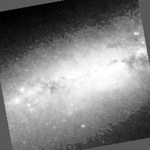 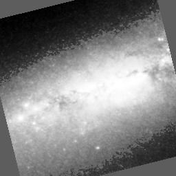
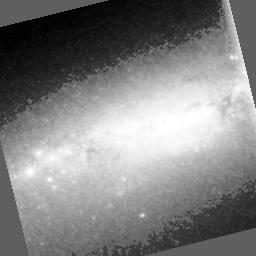
Matrice des corrélations:
1.00 0.99 0.92 0.91 0.83 0.83
0.99 1.00 0.94 0.93 0.86 0.86
0.92 0.94 1.00 0.99 0.97 0.97
0.91 0.93 0.99 1.00 0.98 0.98
0.83 0.86 0.97 0.98 1.00 1.00
0.83 0.86 0.97 0.98 1.00 1.00
(On voit que 1 et 2 sont presque identiques; et 3, 4, 5.)
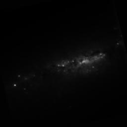 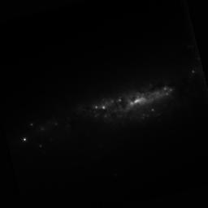
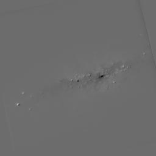 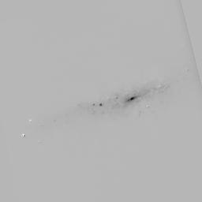
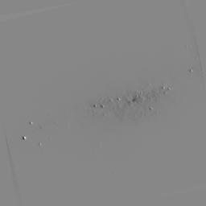 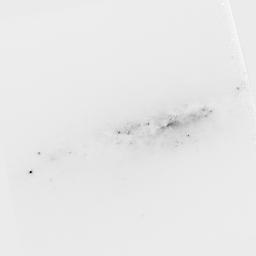
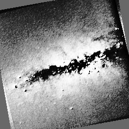 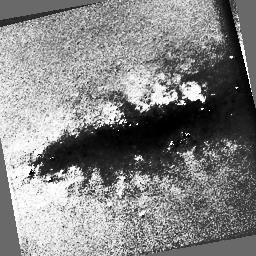
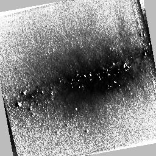 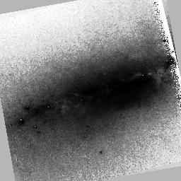
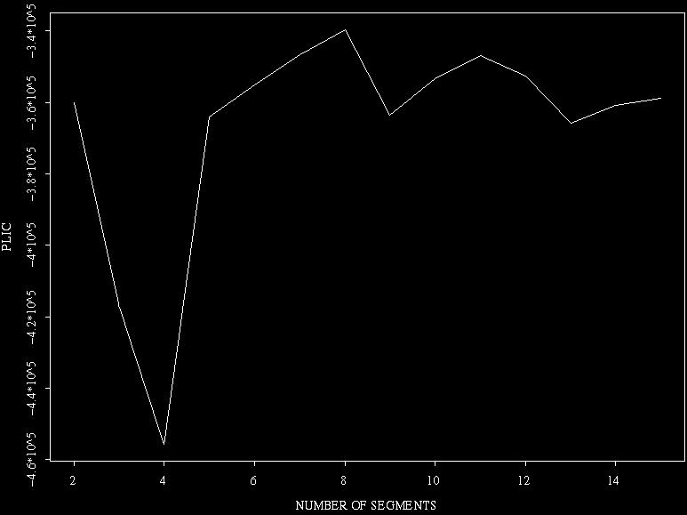
Segmentation à 8 classes:
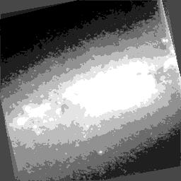
A titre de comparaison, segmentation à 15 classes:
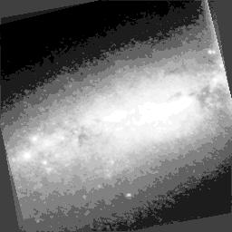